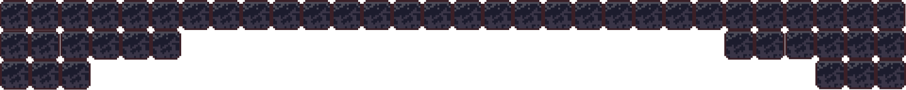
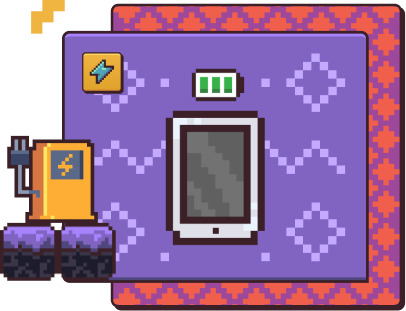

FASE 4
Relacionamento com os profissionais
A função do ATE é contribuir para a consolidação da cultura
da inovação e para o desenvolvimento e execução dos projetos
que envolvem a educação tecnológica na unidade.
Uma nova descoberta!
Conheça os principais profissionais que fazem interface com a atuação do
ATE em seu cotidiano!
Clique nos ícones para saber mais

Agora, você terá uma nova missão.

Carregue o tablet e deixe-o pronto para que os professores possam usá-lo.
No entanto, para concluir sua tarefa,
você precisará se desviar dos obstáculos que aparecerão ao longo
do caminho.
Boa sorte!
O pedagogo participa de uma ampla variedade de atividades que
envolvem questões de âmbito pedagógico, administrativo e
relacional.
A parceria entre o pedagogo e o ATE é essencial. Enquanto o
ATE contribui com o conhecimento técnico sobre o uso das
ferramentas tecnológicas, o pedagogo trabalha as necessidades
educacionais. Essa parceria promove a sinergia entre os
aspectos técnico e pedagógico, assegurando a intencionalidade
e a assertividade em soluções tecnológicas e projetos
educacionais que usem os instrumentos tecnológicos.
Além disso, o pedagogo acompanha o trabalho do ATE, seu apoio aos professores e ajuda a promover a aprendizagem efetiva com momentos de trocas e formação.
O professor é o principal responsável por promover o
aprendizado e o desenvolvimento integral dos estudantes.
A parceria entre o professor e o ATE é fundamental para
favorecer a interação dos estudantes com as tecnologias e
estimular novas estratégias didáticas. Portanto, espera-se que
o ATE possua papel ativo ao propor aos professores a
integração da tecnologia ao plano de aula, de forma a romper
com as barreiras técnicas que podem envolver o docente.
O Analista de Projetos Educacionais do NITE participa de diversas atividades que envolvem a inserção da tecnologia com intencionalidade ao processo de ensino-aprendizagem. Além disso, ele acompanha tecnicamente as unidades in loco e à distância com o intuito de fomentar, implantar e acompanhar o uso de novas tecnologias nas escolas da rede.
O Analista do NITE vai acompanhar os ATEs de maneira
regionalizada, orientando e apoiando esses profissionais para
impulsionar o desenvolvimento e a execução de projetos que
envolvam a educação tecnológica nas escolas.